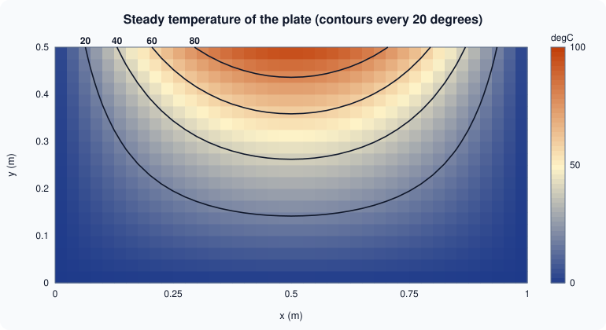

3-D Plotting and Surfaces
|
This content was generated with the assistance of AI and should be verified against the official documentation before being relied on in production. |
Written against MATLAB R2026b. As on 2-D Plotting, the plotting calls were not run in MATLAB. GNU Octave 11.3.0 was used to compute the grids and the temperature field, to check array sizes and a few object properties, and the figure was drawn into an SVG from that data. Output labelled Octave 11.3.0 output was captured; MATLAB’s graphics system differs, so no plot output is claimed to match. Everything else is not run here and was checked against the R2026b documentation.
Terminology
-
A surface is a function of two variables drawn over a rectangular grid: the matrix
Zholds the height at each grid point. -
A grid is a pair of matrices
XandYof the same size asZ, holding the x- and y-coordinates of every point.meshgridandndgridbuild them. -
A colormap is a table of colours. The colour data of a surface (by default its height) is mapped linearly onto the colormap between the colour limits.
-
A contour is a curve of equal height; a contour map shows several levels in two dimensions.
-
The view is the direction from which the camera looks at the axes, given by an azimuth and an elevation angle in degrees.
-
A quiver plot draws a vector field as arrows.
Lines in space: plot3
plot3(x,y,z) is plot with a third coordinate, and it accepts the same line specifications and name-value arguments. It draws a curve or a set of points in space, for instance a particle’s path. zlabel, zlim and grid on complete the axes.
t = linspace(0, 6*pi, 200);
plot3(cos(t), sin(t), t, LineWidth=1.5)
xlabel("x"), ylabel("y"), zlabel("t")
grid on
axis equalNot run here. The chart shows a helix that winds three times around the z-axis. axis equal keeps a circle round in the x-y projection.
Source: MATLAB documentation: plot3
Grids: meshgrid and ndgrid
A surface needs the height at every point of a grid. [X,Y] = meshgrid(x,y) repeats the vector x along the rows and y down the columns, so both matrices have numel(y) rows and numel(x) columns. ndgrid is the n-dimensional counterpart with the opposite orientation: its first output varies along the first dimension, so the result has numel(x) rows. Functions for plotting (surf, mesh, contour) expect the meshgrid orientation, where rows follow y; functions that interpolate on gridded data (griddedInterpolant) use ndgrid.
The heatflow plate is 1 m wide and 0.5 m high. With its top edge held at the temperature 100*sin(pi*x) degrees Celsius and the other edges at 0, the steady temperature is known in closed form:
\[ T(x,y) = 100\,\sin(\pi x)\,\frac{\sinh(\pi y)}{\sinh(\pi/2)}. \]
The second example below uses it in place of the numerical solution that the heatflow project computes with a sparse system, so that the figures have an exact reference.
Octave 11.3.0, a coarse grid of 5 by 3 points (the code uses fprintf and mat2str, which exist in both MATLAB and Octave):
Lx = 1; Ly = 0.5;
x = linspace(0, Lx, 5);
y = linspace(0, Ly, 3);
[X, Y] = meshgrid(x, y);
fprintf("meshgrid: size(X) = %s\n", mat2str(size(X)));
[Xn, Yn] = ndgrid(x, y);
fprintf("ndgrid: size(Xn) = %s\n", mat2str(size(Xn)));
disp("meshgrid X:"); disp(X)
disp("meshgrid Y:"); disp(Y)
T = 100*sin(pi*X/Lx).*sinh(pi*Y/Lx)/sinh(pi*Ly/Lx);
disp("T (rounded):"); disp(round(T*10)/10)Octave 11.3.0 output (MATLAB lays the numbers out with a different column format):
meshgrid: size(X) = [3 5]
ndgrid: size(Xn) = [5 3]
meshgrid X:
0 0.2500 0.5000 0.7500 1.0000
0 0.2500 0.5000 0.7500 1.0000
0 0.2500 0.5000 0.7500 1.0000
meshgrid Y:
0 0 0 0 0
0.2500 0.2500 0.2500 0.2500 0.2500
0.5000 0.5000 0.5000 0.5000 0.5000
T (rounded):
0 0 0 0 0
0 26.7000 37.7000 26.7000 0
0 70.7000 100.0000 70.7000 0The matrix T has one row per y value and one column per x value, and its last row (the top edge, y = 0.5) is the heated edge with the peak 100 at x = 0.5.
Source: MATLAB documentation: meshgrid
Surfaces and meshes
| Function | Draws |
|---|---|
|
A shaded surface. |
|
The same surface as a wireframe, so the lines behind it stay visible. |
|
The surface or mesh with a contour plot underneath. |
|
A surface with a light source, for shaded relief. |
|
Contour lines of the matrix; a scalar |
|
Filled contour map. |
|
Contour lines at their own heights in 3-D. |
|
The matrix as coloured cells seen from above. |
A 3-D surf is created in the 3-D view and a contour in 2-D, both with parula as the default colormap (the default since R2014b).
Lx = 1; Ly = 0.5;
[X, Y] = meshgrid(linspace(0, Lx, 41), linspace(0, Ly, 21));
T = 100*sin(pi*X/Lx).*sinh(pi*Y/Lx)/sinh(pi*Ly/Lx);
tiledlayout(1, 2)
nexttile
surf(X, Y, T)
xlabel("x (m)"), ylabel("y (m)"), zlabel("T (\circ C)")
title("Surface")
colorbar
nexttile
contourf(X, Y, T, 0:20:100)
hold on
contour(X, Y, T, [20 40 60 80], "k", ShowText="on");
hold off
axis equal tight
xlabel("x (m)"), ylabel("y (m)")
title("Contour map")Not run here. The first tile is a surface that rises from 0 along three edges to a ridge of height 100 along the middle of the top edge. The second tile is the plate seen from above with filled bands every 20 degrees and four labelled black contour lines at 20, 40, 60 and 80 degrees, which are arches around the hot middle of the top edge.
The figure draws the same temperature field from the Octave-computed data, as a contour map: the shades are the field and the four black lines are the contours at 20, 40, 60 and 80 degrees. It is an original drawing, not a MATLAB export.

Source: MATLAB documentation: surf
Octave 11.3.0, checking the sizes and the peak on the coarse 5-by-3 grid (code run as written below):
fig = figure("visible","off");
hs = surf(X, Y, T);
fprintf("surf returns a %s handle; zdata size %s\n", get(hs,"type"), mat2str(size(get(hs,"zdata"))));
contour(X, Y, T, [20 60]);
fprintf("peak T = %.1f at x = %.2f, y = %.2f\n", max(T(:)), X(find(T==max(T(:)),1)), Y(find(T==max(T(:)),1)));
view(3); fprintf("view(3): %s\n", mat2str(view));
close(fig);This continues the earlier snippet (the variables X, Y and T come from it). Octave 11.3.0 output:
surf returns a surface handle; zdata size [3 5]
peak T = 100.0 at x = 0.50, y = 0.50
view(3): [-37.5 30]The surface keeps Z as a matrix of the same size (3 by 5), the peak is at the middle of the top edge, and view(3) gives the default 3-D view, an azimuth of -37.5 and an elevation of 30 degrees. In MATLAB get(hs,"type") returns "surface" as well, and hs is a Surface object, not a number as in Octave.
Vector fields: quiver
quiver(X,Y,U,V) draws an arrow with components U and V at each point (X,Y). The natural vector field of the heatflow plate is the heat flux, minus the conductivity times the gradient of the temperature. gradient(T,hx,hy) returns the numerical derivatives with respect to the column and row directions of the matrix, hx and hy being the grid spacings.
h = 0.25;
[dTdx, dTdy] = gradient(T, h, h); % T on the 5-by-3 grid above
k = 1.0; % conductivity in W/(m K), illustrative
qx = -k*dTdx;
qy = -k*dTdy;
contour(X, Y, T, 5)
hold on
quiver(X, Y, qx, qy)
hold off
axis equal tightOctave 11.3.0 output of the qy matrix (rounded to one decimal):
0 -106.8000 -151.0000 -106.8000 0
0 -141.4000 -200.0000 -141.4000 0
0 -176.1000 -249.0000 -176.1000 0The vertical heat flux is negative everywhere: heat flows from the hot top edge (large y) toward the cold bottom edge. The three rows are y = 0, 0.25 and 0.5. The values at the boundary rows are one-sided differences, which are less accurate. The chart shows arrows that point downward and are longest under the middle of the top edge. quiver3, streamslice and streamline are the 3-D and streamline versions.
Source: MATLAB documentation: quiver
The camera, colours and lighting
| Command | Effect |
|---|---|
|
Camera angles in degrees; |
|
Rotate with the mouse. The axes toolbar also has a rotate button. |
|
The same unit length on every axis, otherwise a square plate looks stretched. |
|
Sets the colormap of the current figure or axes: |
|
Adds the colour scale. |
|
Sets the colour limits. It is the new name of |
|
Edge and colour treatment of surfaces. |
|
The lighting algorithm. It has no effect without a light object: add one with |
|
The reflectance of a lit surface. |
surf(X, Y, T)
shading interp
colormap("turbo")
clim([0 100])
colorbar
view(-30, 35)
camlight headlight
lighting gouraud
material dullNot run here. The surface is smoothly coloured from blue (0 degrees) to red (100 degrees) with a headlight that makes the ridge look three-dimensional. shading interp and lighting gouraud are what turn the faceted grid into a smooth shape.
Pick a colormap that suits the data: a sequential map for temperature, a diverging one for deviations from a reference, and never one that depends on colour alone for people with colour-vision deficiency (a lightness ramp such as gray or parula survives monochrome printing better than jet, the pre-R2014b default).
Source: MATLAB documentation: colormap
Plotting a function directly: fsurf and fcontour
fsurf(f,[xmin xmax ymin ymax]) plots a function handle of two variables with adaptive sampling, and fcontour and fmesh are its siblings. They replace ezsurf and ezcontour, which the documentation marks as not recommended, and need no grid. They were added in R2016a.
T = @(x,y) 100*sin(pi*x).*sinh(pi*y)/sinh(pi/2);
fsurf(T, [0 1 0 0.5])
xlabel("x (m)"), ylabel("y (m)"), zlabel("T (\circ C)")
figure
fcontour(T, [0 1 0 0.5], LevelList=20:20:80, ShowText="on")Not run here. The first chart is the same surface as above and the second shows the four labelled contour lines. The handle must be vectorized (use .* and ./), because it is called with arrays.
Source: MATLAB documentation: fsurf
Standard shapes: sphere and cylinder
[X,Y,Z] = sphere(n) returns the coordinates of a unit sphere as (n+1)-by-(n+1) matrices, and [X,Y,Z] = cylinder(r,n) the coordinates of a surface of revolution whose radii are given by r, with 2 rows (bottom and top) and n+1 columns. Both are for passing to surf, scaling and translating.
Octave 11.3.0 (continuing the gradient snippet; the code uses only functions that exist in MATLAB):
[xs, ys, zs] = sphere(20);
fprintf("sphere(20): size(xs) = %s\n", mat2str(size(xs)));
[xc, yc, zc] = cylinder([1 0.5], 10);
fprintf("cylinder: size(xc) = %s, radius at the two ends: %.2f, %.2f\n", mat2str(size(xc)), xc(1,1), xc(2,1));Octave 11.3.0 output:
sphere(20): size(xs) = [21 21]
cylinder: size(xc) = [2 11], radius at the two ends: 1.00, 0.50The sphere has 21 by 21 points for n = 20, and the cylinder call with the radii [1 0.5] gives a cone frustum whose bottom radius is 1 and top radius 0.5.
Source: MATLAB documentation: sphere
Common errors and pitfalls
The exact messages were not run here; the causes are documented behaviour.
-
Grid orientation. Mixing
ndgridoutput withsurf, or aZthat isnumel(x)-by-numel(y), gives a transposed or wrongly sized surface. Forsurf(x,y,Z)with vectors,numel(x)must be the number of columns ofZandnumel(y)the number of rows, otherwise MATLAB reports that the sizes are incompatible. -
A non-vectorized function on a grid.
Z = sin(X*Y)is a matrix product and fails or gives the wrong result for matrices; use.*,./and.^for element-wise arithmetic. -
Axes look stretched. Without
axis equal, a 1 by 0.5 metre plate is drawn in whatever aspect the axes box has. -
caxis,ezsurfandezcontourin old code. Useclim,fsurfandfcontour. -
Lighting has no effect.
lightingdoes nothing until a light exists; addcamlight. -
contourlevels. A scalar third argument is the number of levels, not a height:contour(X,Y,T,60)draws 60 lines. Use[60 60]for the single level 60. -
NaN in a surface. NaN values leave holes in
surfandmesh; they are skipped bycontour.
Where older books differ
-
Older books use
jetas the default colormap and 3-D plots in old default colours;parulareplaced it in R2014b. Many of them also writecaxis, andshading interpwithcolormap(jet)for effect. -
ezsurf,ezmesh,ezcontourandezplot3are in older books; the current functions arefsurf,fmesh,fcontourandfplot3. -
Graphics objects are no longer plain numbers (see Graphics Objects and Customization), so
set(h,"FaceColor","interp")can be writtenh.FaceColor = "interp". -
Releases from R2025a give charts a light or dark theme; a surface plot can also be drawn in polar coordinates by passing a
PolarAxesobject (R2025a).